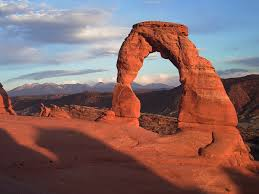

Arches National ParkDiscover a landscape of contrasting colors, land forms, and textures unlike any other. The park has over 2,000 natural stone arches, hundreds of soaring pinnacles, massive rock fins, and giant balanced rocks. This red-rock wonderland will amaze you with its formations, refresh you with its trails, and inspire you with its sunsets. A Story in Stone
The story of Arches begins roughly 65 million years ago. At that time, the area was a dry seabed spreading from horizon to horizon. If you stood in Devils Garden then, the striking red rock features we see today would have been buried thousands of feet below you, raw material as yet uncarved. Then the landscape slowly began to change.
First, geologic forces wrinkled and folded the buried sandstone, as if it were a giant rug and someone gathered two edges towards each other, making lumps across the middle called Anticlines. As the sandstone warped, fractures tore through it, establishing the patterns for rock sculptures of the future.
Next, the entire region began to rise, climbing from sea level to thousands of feet in elevation. What goes up must come down, and the forces of erosion carved layer after layer of rock away. Once exposed, deeply buried sandstone layers rebounded and expanded, like a sponge expands after it's squeezed (though not quite so quickly). This created even more fractures, each one a pathway for water to seep into the rock and further break it down.
Today, water shapes this environment more than any other force. Rain erodes the rock and carries sediment down washes and canyons to the Colorado River. Desert varnish appears where water cascades off cliffs. In winter, snowmelt pools in fractures and other cavities, then freezes and expands, breaking off chunks of sandstone. Small recesses develop and grow bigger with each storm. Little by little, this process turns fractured rock layers into fins, and fins into arches. Arches also emerge when potholes near cliff edges grow deeper and deeper until they wear through the cliff wall below them. In addition to grand arches, water dissolves small honeycomb formations called tafoni.
Over time, the same forces that created these arches will continue to widen them until they collapse. Standing next to a monolith like Delicate Arch, it's easy to forget that arches are impermanent. Yet the fall of Wall Arch in 2008 reminded us that this landscape continues to change. While some may fall, most of these arches will stand well beyond our lifetime: a lifetime blessed with an improbable landscape 65 million years in the making.

The picture above is of Arches National Park.
Facts:
There are 2,000 natural stone arches.
It used to be underwater.
History and Culture:
The NPS acknowledges, with respect, that Native people have been successful stewards of the land within the park since time immemorial. The NPS understands that the park is located within the ancestral and traditional homeland of the Hopi Tribe, Las Vegas Tribe of Paiute Indians of the Las Vegas Indian Colony, Moapa Band of Paiute Indians of the Moapa River Reservation, Navajo Nation, Rosebud Sioux Tribe of the Rosebud Sioux Reservation, Southern Ute Indian Tribe of the Southern Ute Reservation, Ute Indian Tribe of Uintah and Ouray Reservation, Ute Mountain Ute Tribe, White Mesa Ute, and Zuni Tribe of the Zuni Reservation.